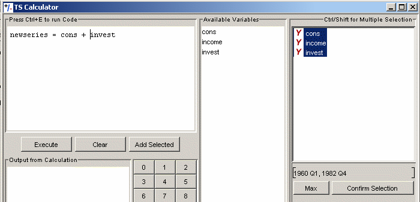

Data Table
General Remark
Many useful functions are accessible via the RIGHT
mouse button over a selected time series in the time
series list as is shown in the picture.

Order of Selection
A project contains all the time series that are
visible in the time series list. To save a project, go to
the File->Save as Project menu item and
select a file. The default suffix is .jsc
(JStatCom). No further interaction is necessary. The file
is in binary format and cannot be opened with another
program. To export datasets to ASCII format check exporting datasets.
|